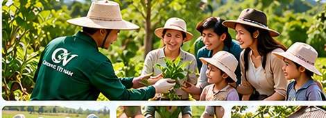
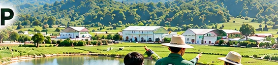

Khởi nguồn từ thảo dược Việt. Phát triển bằng sự minh bạch.
Organic Việt Nam định vị sản phẩm thảo dược, kết nối nguồn nguyên liệu, quy trình chăm sóc và sản xuất, chất lượng và truy xuất nguồn gốc.



Phát triển sản phẩm thảo dược từ nguồn nguyên liệu có hồ sơ.
Công ty Cổ phần Tập đoàn Organic Việt Nam giữ nguyên tên pháp nhân và thương hiệu, lựa chọn định hướng phát triển sản phẩm thảo dược từ vùng nguyên liệu đến nghiên cứu, sản xuất và phân phối.
Mục tiêu là tìm hiểu nguồn thảo dược phù hợp, ghi nhận quy trình chăm sóc và sản xuất theo lô, cung cấp thông tin đã kiểm chứng. Tên thương hiệu không thay thế bằng chứng về đặc tính hoặc chứng nhận của sản phẩm.
Tầm nhìn, sứ mệnh và giá trị cốt lõi.
Tầm nhìn
Hướng tới chuỗi sản phẩm thảo dược Việt Nam với nguồn nguyên liệu minh bạch, quy trình phù hợp và chất lượng có thể kiểm chứng.
Sứ mệnh
Kết nối vùng nguyên liệu thảo dược với nghiên cứu sản phẩm và thị trường thông qua quản lý chất lượng và truy xuất nguồn gốc.
Thông tin rõ ràng, có thể kiểm chứng.
Kiểm soát theo công đoạn và sản phẩm.
Sử dụng nguồn lực theo hướng hiệu quả.
Đồng hành cùng đối tác và cộng đồng.